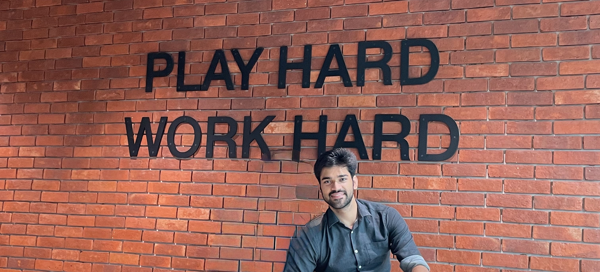

<div class="row align-items-center default-container">
    <div class="col-lg-8">
        <div class="content">
            <div class="content-left">
                <h2 class="default-topic">About me.</h2>
                <p class="default-p">
                    My name is Pranav Sharma and I enjoy <span class="default-highlight">Developing and innovating new Ideas to Use.</span>
                </p>
                <p class="default-p">
                    I am a Software Engineer working as a Data Science Engineer from India.
                </p>
                <p class="default-p">My journey in software development began in 2019, I joined IIIT Delhi in Computer Science branch. Since the begining i liked to explore and create solutions to daily life problems with help of <span class="default-highlight">programming,
                    logic and automation</span>.
                    Also landed my <span class="default-highlight">first job in the tech industry</span> as a Software developer in <span class="default-highlight">Natwest Group</span>. After doing a 3 month Internship with Natwest, i joined in <span class="default-highlight">Micron</span> as an Associate Data Science Engineer.
                </p>
                <p class="default-p">
                    Fast-forward to today, and so far I have had the privilege of working with fantastic
                    people in the industry.
                </p>
                <p class="default-p">
                    I had the chance to code in <span class="default-highlight">
                        several technologies</span> and also grow important <span class="default-highlight">
                        soft skills</span>: I led transformative changes to improve team dynamics
                    and organizational culture inside a tech company. I have acquired code knowledge while working with groups of
                    developers and studying documentation. I gained experience in programming logic,
                    Machine Learning and AI Use cases, <span class="default-highlight">developed websites</span>,
                    <span class="default-highlight">FAST APIs</span>, built visual dashboards,
                    <span class="default-highlight">data analytical dashboards</span>, and <span class="default-highlight">
                        using machine learning models to help and predict for optimising the resources</span> from various projects.
                </p>
                <p>
                    
                </p>
                <p class="default-p">
                    But that's on a professional side. On a personal note, other things about me include: I have a passion for <span class="default-highlight">
                    Designing, Badminton, travelling</span>, Books, 
                    <span class="default-highlight"> movies and series</span> (The Office is my favourite!),
                    Alfredo Past, and friends.
                </p>
                <p>
                    
                </p>
                <p class="default-p">
                    I am continuously learning and adapting to new technologies and methodologies.
                    My goal is to create efficient, scalable, and user-friendly <span class="default-highlight">software
                    solutions that make a difference</span>. Whether it's front-end development, back-end services,
                    or developing ML/AI Solutions, I am <span class="default-highlight">passionate about every aspect
                     of software development.</span>
                </p>
            </div>
            <div class="content">
                <div class="content-left">
                    <h2 class="default-topic">Reach out.</h2>
                    <p class="default-p">
                        Follow me on social media, check out my Github account for projects or
                        I would be happy to know how my <span class="default-highlight">problem-solving skills</span>
                        can contribute to<span class="default-highlight"> address the challenges you are facing</span>.
                    </p>
                    <button>
                        <a routerLink="/contact">
                            > Contact me
                        </a>
                    </button>
                </div>
            </div>
        </div>
    </div>
</div>
